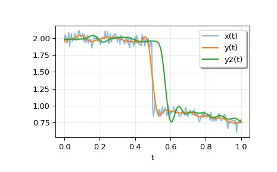

scipy.signal.sosfiltfilt¶
-
scipy.signal.sosfiltfilt(sos, x, axis=-1, padtype='odd', padlen=None)[source]¶ A forward-backward digital filter using cascaded second-order sections.
See
filtfiltfor more complete information about this method.Parameters: sos : array_like
Array of second-order filter coefficients, must have shape
(n_sections, 6). Each row corresponds to a second-order section, with the first three columns providing the numerator coefficients and the last three providing the denominator coefficients.x : array_like
The array of data to be filtered.
axis : int, optional
The axis of x to which the filter is applied. Default is -1.
padtype : str or None, optional
Must be ‘odd’, ‘even’, ‘constant’, or None. This determines the type of extension to use for the padded signal to which the filter is applied. If padtype is None, no padding is used. The default is ‘odd’.
padlen : int or None, optional
The number of elements by which to extend x at both ends of axis before applying the filter. This value must be less than
x.shape[axis] - 1.padlen=0implies no padding. The default value is:3 * (2 * len(sos) + 1 - min((sos[:, 2] == 0).sum(), (sos[:, 5] == 0).sum()))
The extra subtraction at the end attempts to compensate for poles and zeros at the origin (e.g. for odd-order filters) to yield equivalent estimates of padlen to those of
filtfiltfor second-order section filters built withscipy.signalfunctions.Returns: y : ndarray
The filtered output with the same shape as x.
See also
Notes
New in version 0.18.0.
Examples
>>> from scipy.signal import sosfiltfilt, butter >>> import matplotlib.pyplot as plt
Create an interesting signal to filter.
>>> n = 201 >>> t = np.linspace(0, 1, n) >>> np.random.seed(123) >>> x = 1 + (t < 0.5) - 0.25*t**2 + 0.05*np.random.randn(n)
Create a lowpass Butterworth filter, and use it to filter x.
>>> sos = butter(4, 0.125, output='sos') >>> y = sosfiltfilt(sos, x)
For comparison, apply an 8th order filter using
sosfilt. The filter is initialized using the mean of the first four values of x.>>> from scipy.signal import sosfilt, sosfilt_zi >>> sos8 = butter(8, 0.125, output='sos') >>> zi = x[:4].mean() * sosfilt_zi(sos8) >>> y2, zo = sosfilt(sos8, x, zi=zi)
Plot the results. Note that the phase of y matches the input, while y2 has a significant phase delay.
>>> plt.plot(t, x, alpha=0.5, label='x(t)') >>> plt.plot(t, y, label='y(t)') >>> plt.plot(t, y2, label='y2(t)') >>> plt.legend(framealpha=1, shadow=True) >>> plt.grid(alpha=0.25) >>> plt.xlabel('t') >>> plt.show()
